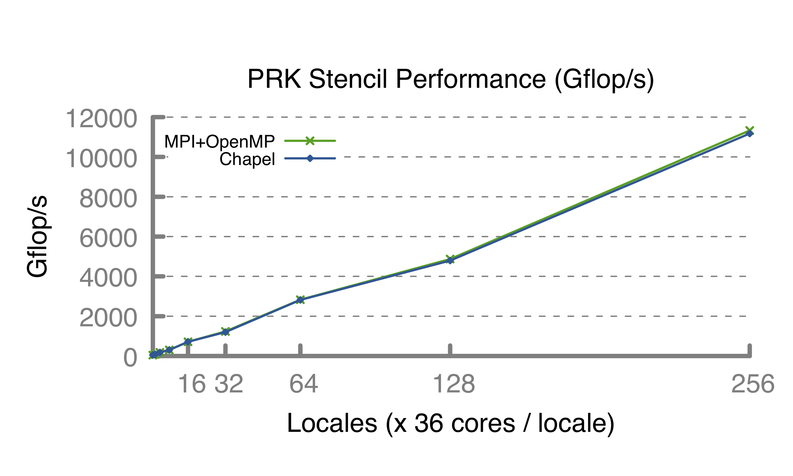
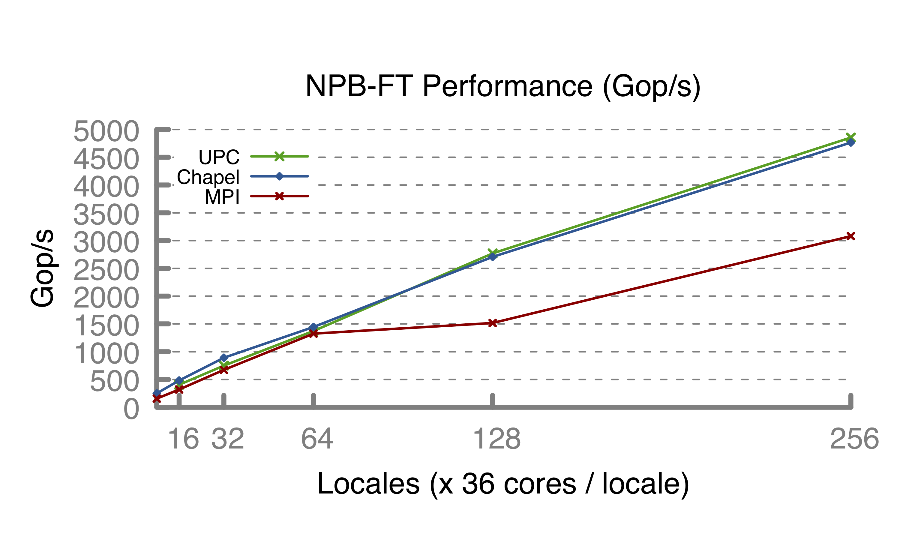

Chapel is a programming language designed for productive parallel computing at scale.
Why Chapel? Because it simplifies parallel programming through elegant support for:
|  |  |
use CyclicDist; // use the Cyclic distribution library
config const n = 100; // use --n=<val> when executing to override this default
forall i in Cyclic.createDomain(1..n) do
writeln("Hello from iteration ", i, " of ", n, " running on node ", here.id);